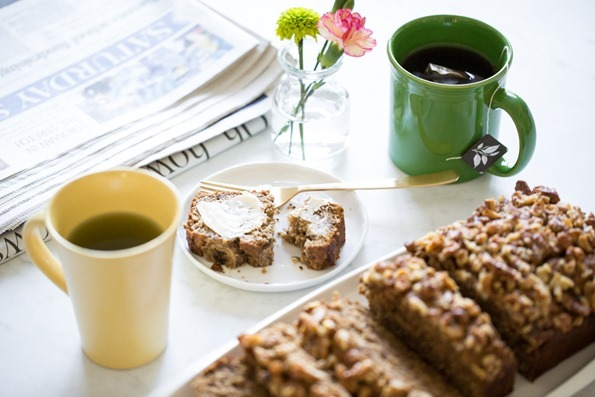

Banana Bread

Description
This vegan banana bread is delicious, wholesome, naturally sweetened, and takes 10 minutes to throw together. What could be better when you have some overripe bananas to use up? Nothing, my friends, absolutely nothing! Whip this into the oven before guests arrive to fill the house with a delectable banana bread aroma. For a fun twist, try adding cinnamon and nutmeg into the dough before baking, or even stir in some chocolate chips or chopped dark chocolate for a more decadent loaf. I love it topped with both sliced banana (which enhances the sweetness and banana flavour) and crunchy walnuts.
Ingredients
For the wet ingredients
- 1 1/3 cups (320 g) mashed very ripe banana (about 4 medium or 3 large)
- 2 tablespoons (15 g) ground flaxseed
- 1/3 cup (80 mL) plant-based milk (I like almond milk)
- 1/3 cup (80 mL) coconut oil, melted
- 2 tablespoons (30 mL) pure maple syrup
- 2 teaspoons (10 mL) pure vanilla extract
For the dry ingredients
- 1/4 cup plus 2 tablespoons (60 g) coconut sugar
- 1/2 cup (50 g) rolled oats
- 1 teaspoon baking soda
- 1/2 teaspoon baking powder
- 1/2 teaspoon fine sea salt
- 1 1/2 cups (210 g) light/white spelt flour or whole-grain spelt flour
- sliced banana, chopped walnuts, and/or chocolate chips, for topping (optional)
Instructions
- Preheat the oven to 350°F (180°C). Lightly spray a 9x5-inch loaf pan with oil and set aside.
- In a large bowl, mash the banana until almost smooth, and make sure you have 1 1/3 cups.
- Stir the wet ingredients (ground flax, milk, melted oil, maple syrup, and vanilla) into the banana until combined.
- Stir the dry ingredients (sugar, oats, baking soda, baking powder, salt, and flour) into the wet mixture, one by one, in the order listed. Stop stirring when there are no flour patches at the bottom of the bowl.
- Spoon the dough into the loaf pan and spread out evenly. Add your desired toppings and gently press them into the dough to adhere.
- Bake the loaf, uncovered, for 45 to 55 minutes (I bake for 47 to 48 minutes, but your time may vary), until lightly golden and firm on top. The top of the loaf should slowly spring back when touched.
- Place the loaf pan on a cooling rack for 30 minutes. Then, slide a knife around the loaf to loosen it and gently remove it from the pan, placing it directly onto the cooling rack until completely cooled (or to hasten the cooling process, transfer to the fridge for 45 minutes).
- Slice the loaf once cooled. I love to spread it with vegan butter or coconut oil. The loaf will keep in the fridge tightly wrapped for 3 to 4 days, or it can be frozen for 4 to 6 weeks.
Enjoy!